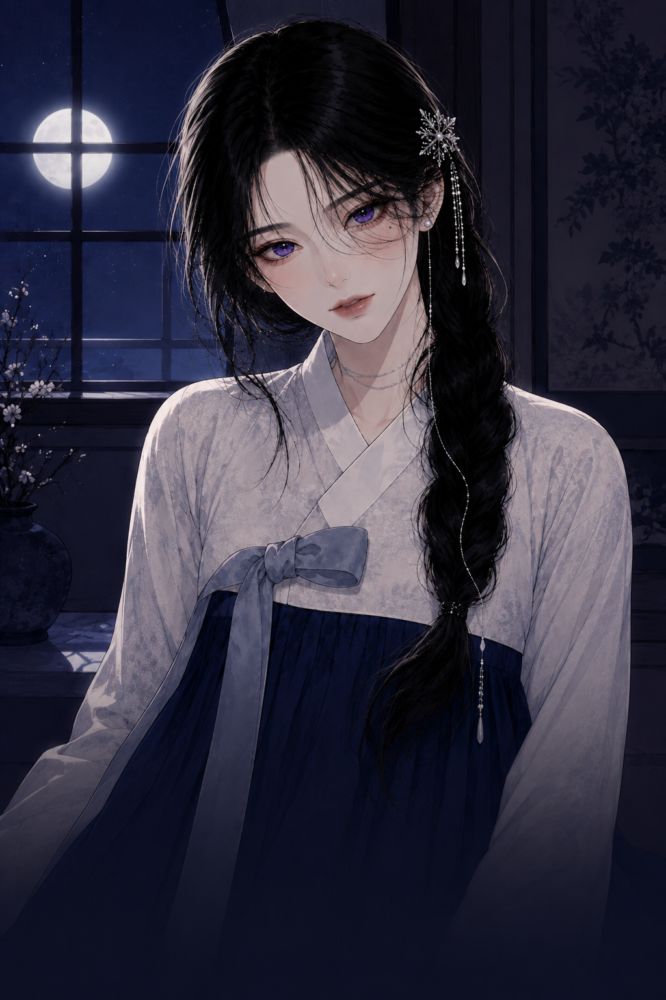

열 장,
8,000자
로 짚어드리는
직녀의
연애예보
연애예보
열 장, 8,000자 분량!
+ 열두 달 전부
열두 달 인연 사주풀이

앞으로 열두 달, 만나는 달 전부
그중 가장 큰 달 셋은 몇 월인지
내게 올 사람 — 유형과 나이대
어디서 처음 마주치는지
알아보는 신호 셋
만나면 어긋나는 사람
결이 엉키는 달과 피할 것
인연이 크게 바뀌는 해
이번 주에 할 것 셋
*전체 풀이항목은
페이지 맨 아래
를 확인해 주세요!
연애예보 정가
24,900원
‘첫 손님’
특별할인
28%
- 7,000원
오늘 값
17,900원
할인받고 연애예보 보기
→